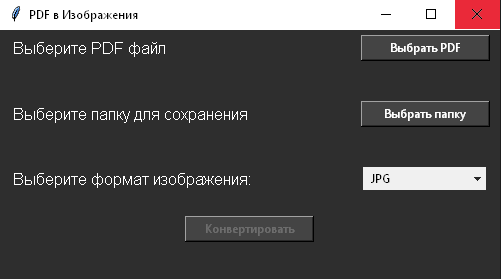
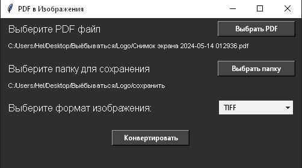
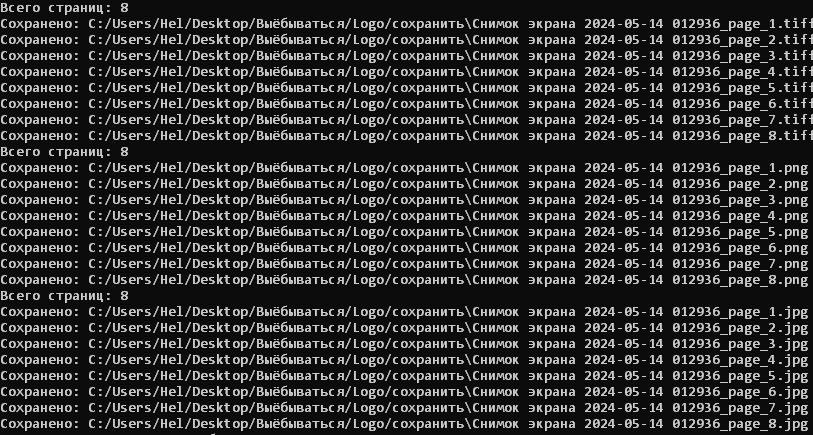

How to Choose a Dedicated Server
How to choose a dedicated server.
This script was created to simplify my own workflow. I would be happy if it makes your life a bit easier as well.
In just a few seconds, you can convert a PDF file into a set of images and save them to a selected folder
(or the script can create the folder if it doesn’t exist). All pages are converted in the correct order.
Each image is named using the format:
[file_name]_page_[page_number].[format].
For convenience, the script includes a graphical interface.
convert_pdf_to_images.py supports the following image formats: JPG, PNG, TIFF.

For convenience, I created a small interface and also added a bat file to the archive for quick script execution. The download button for the script archive is located above. At the end of this article, the full source code is provided for those who are curious.
cmd → Enter).python --versionpip install pymupdf pillowconvert_pdf_to_images.bat (Windows).convert_pdf_to_images.py via the command line.

import os
import fitz # PyMuPDF
import tkinter as tk
from tkinter import filedialog, messagebox
from tkinter import ttk # for a styled OptionMenu
from PIL import Image
def save_image_as_tiff(pix, image_path):
# Convert Pixmap to a Pillow image
img = Image.frombytes("RGB", [pix.width, pix.height], pix.samples)
img.save(image_path, format="TIFF")
def convert_pdf_to_images(pdf_path, output_folder, image_format):
try:
pdf_document = fitz.open(pdf_path)
print(f"Total pages: {pdf_document.page_count}")
for page_num in range(pdf_document.page_count):
page = pdf_document.load_page(page_num)
pix = page.get_pixmap()
# Build output path
image_path = os.path.join(
output_folder,
f"{os.path.basename(pdf_path)[:-4]}_page_{page_num + 1}.{image_format.lower()}",
)
# If TIFF, use Pillow
if image_format.lower() == "tiff":
save_image_as_tiff(pix, image_path)
else:
pix.save(image_path) # for PNG and JPG
print(f"Saved: {image_path}")
messagebox.showinfo("Success", f"Images were saved to: {output_folder}")
except Exception as e:
messagebox.showerror("Error", f"Error while processing file {pdf_path}: {e}")
def select_pdf_file():
pdf_path = filedialog.askopenfilename(
title="Select a PDF file",
filetypes=[("PDF files", "*.pdf")],
)
if pdf_path:
selected_pdf_label.config(text=f"{pdf_path}") # replace text fully
convert_button.config(state=tk.NORMAL)
convert_button.pdf_path = pdf_path
def select_output_folder():
output_folder = filedialog.askdirectory(title="Select an output folder")
if output_folder:
selected_folder_label.config(text=f"{output_folder}") # replace text fully
convert_button.output_folder = output_folder
def start_conversion():
pdf_path = getattr(convert_button, "pdf_path", None)
output_folder = getattr(convert_button, "output_folder", None)
image_format = format_var.get()
if not pdf_path or not output_folder:
messagebox.showerror("Error", "Please select a PDF file and an output folder.")
return
convert_pdf_to_images(pdf_path, output_folder, image_format)
# Create main window
root = tk.Tk()
root.title("PDF to Images")
root.geometry("500x250")
root.configure(bg="#2e2e2e")
# Dark theme
label_fg = "#ffffff"
button_bg = "#444444"
button_fg = "#ffffff"
button_width = 17 # fixed width for all buttons
# Select PDF file (row 1)
frame_pdf_button = tk.Frame(root, bg="#2e2e2e")
frame_pdf_button.pack(pady=5, fill="x")
pdf_file_label = tk.Label(
frame_pdf_button,
text="Select a PDF file",
fg=label_fg,
bg="#2e2e2e",
font=("Arial", 12),
anchor="w",
)
pdf_file_label.pack(side="left", padx=10)
select_pdf_button = tk.Button(
frame_pdf_button,
text="Choose PDF",
command=select_pdf_file,
bg=button_bg,
fg=button_fg,
width=button_width,
)
select_pdf_button.pack(side="right", padx=10)
# Selected file path (separate row)
frame_pdf_path = tk.Frame(root, bg="#2e2e2e")
frame_pdf_path.pack(pady=(0, 10), fill="x")
selected_pdf_label = tk.Label(
frame_pdf_path,
text="",
fg=label_fg,
bg="#2e2e2e",
font=("Arial", 8),
anchor="w",
wraplength=480,
)
selected_pdf_label.pack(fill="x", padx=10)
# Select output folder (row 2)
frame_folder_button = tk.Frame(root, bg="#2e2e2e")
frame_folder_button.pack(pady=5, fill="x")
output_folder_label = tk.Label(
frame_folder_button,
text="Select an output folder",
fg=label_fg,
bg="#2e2e2e",
font=("Arial", 12),
anchor="w",
)
output_folder_label.pack(side="left", padx=10)
select_folder_button = tk.Button(
frame_folder_button,
text="Choose folder",
command=select_output_folder,
bg=button_bg,
fg=button_fg,
width=button_width,
)
select_folder_button.pack(side="right", padx=10)
# Selected folder path (separate row)
frame_folder_path = tk.Frame(root, bg="#2e2e2e")
frame_folder_path.pack(pady=(0, 10), fill="x")
selected_folder_label = tk.Label(
frame_folder_path,
text="",
fg=label_fg,
bg="#2e2e2e",
font=("Arial", 8),
anchor="w",
wraplength=480,
)
selected_folder_label.pack(fill="x", padx=10)
# Select image format (row 3)
frame_format = tk.Frame(root, bg="#2e2e2e")
frame_format.pack(pady=5, fill="x")
format_label = tk.Label(
frame_format,
text="Select image format:",
fg=label_fg,
bg="#2e2e2e",
font=("Arial", 12),
anchor="w",
)
format_label.pack(side="left", padx=10)
format_var = tk.StringVar(value="JPG")
format_dropdown = ttk.OptionMenu(frame_format, format_var, "JPG", "JPG", "PNG", "TIFF")
format_dropdown.config(width=15)
format_dropdown.pack(side="right", padx=14)
# Convert button (row 4)
frame_convert = tk.Frame(root, bg="#2e2e2e")
frame_convert.pack(pady=20, fill="x")
convert_button = tk.Button(
frame_convert,
text="Convert",
state=tk.DISABLED,
command=start_conversion,
bg=button_bg,
fg=button_fg,
width=button_width,
)
convert_button.pack()
root.mainloop()